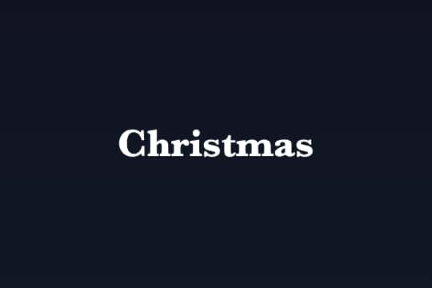

Christmas

リンク
以下のリンクから実際に作品をプレイすることができます。
SCRATCHで見る YouTubeで見るこだわったところ
雪のように速い物体は、特に暗いところでは肉眼で見るとブレにより半透明で細長く見えます。そのため、移動するスピードと一番自然な2:1の比でブレるように作りました。ひとつひとつの雪の粒の動きは、風の流れ方と雪それぞれのランダム性のバランスの調節にも拘りました。デフォルトの雪の重さで表示してフレームレートが下がったとき、自動的に描画するオブジェクト数を減らすようにしています。
夜の外の様子を幻想的にするため街灯を追加しました。街灯の光のリアルさを出すために、雪と街灯との距離を三次元で測り、距離に応じて雪が街灯の光を反射させるようにしました。街灯の光は揺らぐようにして、その光に応じて街灯の鉄、地面、雪の反射の明るさも変化するようにし、ライトのフレアの大きさと透明度を幻想的な光になるように調節しました。
教会の外では、建物の低音のみが壁を通るようにし、高音の大きさを下げ建物内の音漏れを再現しました。教会内では聖歌が教会内に響いているようにして臨場感を出してみました。効果音は、ループ再生するときに切れ目が目立たないように、2つの同じ音を交互にフェードイン、フェードアウトを繰り返しながら再生しています。それぞれの音もバランスを、聞き取りやすさやリアルさを考えながら調節しました。風の速度と風の効果音は音量を同期させてリアルさを出しました。